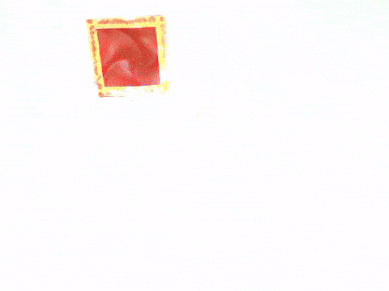
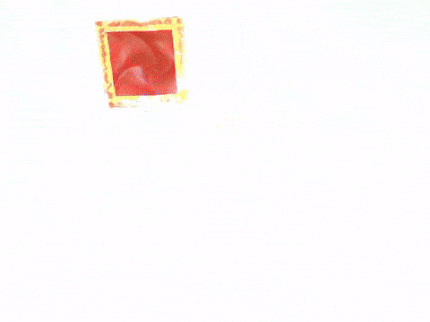

Mapping
In Mapping, the camera detects object centers using multiple guesses, refining the X, Y coordinates with each iteration.
This project presents a system capable of autonomously docking small satellites with millimeter precision using custom 3D-printed geometric components, robotic arms, and computer vision algorithms.
In the evolving landscape of small satellite technology, the need for precise and autonomous docking systems is critical to enable efficient on-orbit servicing, refueling, and assembly of satellite constellations. Current docking systems often lack the precision necessary for small satellite missions, where minimal alignment errors can lead to mission failure. Furthermore, existing CubeSat power transfer mechanisms require manual intervention, reducing operational efficiency and increasing risks during deployment in space environments.
We demonstrate that our system can autonomously dock small satellites with millimeter precision and transfer power seamlessly between independent CubeSat systems. By leveraging 3D-printed components, robotic arms, and computer vision algorithms, we achieve accurate alignment and power transfer with zero-play. We evaluate our approach by performing docking trials over a 1-meter distance, validating the accuracy and reliability of the system under various orientations. Our results show that the method consistently achieves precise docking, ensuring alignment across multiple docking attempts with high fidelity.
Start Frame
In this project, I was responsible for integrating all system components, including 3D-printed parts, robotic arms, lighting, and cameras. Additionally, I also primary developer in the tracking and docking code enabling autonomous docking with millimeter precision between independent CubeSat systems, validating the system's performance through repeated docking trials under various conditions. Below is a detailed overview of my contributions, which include ensuring system accuracy through multiple docking trials and optimizing performance under various operational conditions.
The following components were utilized to simulate and model the autonomous docking of a small satellite: 3D-printed probe and receiver geometric interfaces, Arducam UC-626, and myCobot Pi.
The flowchart outlines the autonomous docking process, starting with the camera detecting object centers and refining guesses to align with the robotic arm. Vertices are identified, and adjustments are made if needed. Once aligned, micro adjustments and distance calculations ensure proper positioning before the docking attempt is made.
The following process outlines the mapping, plotting, tracking, and docking of the autonomous system. Once initiated, the camera detects object centers (mapping), ccharts centers and calculates vectors (plotting), aligns and adjusts the robotic arm (tracking), and finally, measures distance to ensure a successful docking.
In Mapping, the camera detects object centers using multiple guesses, refining the X, Y coordinates with each iteration.
In Plotting, receiver centers are charted graphically as a function of time.
In Tracking, the system aligns the camera or arm with the object, adjusts for incorrect vertices, and makes micro adjustments until proper alignment is achieved.
In Docking, the system continuously measures the distance between the male and female docking interfaces. Once properly aligned, the docking is attempted.